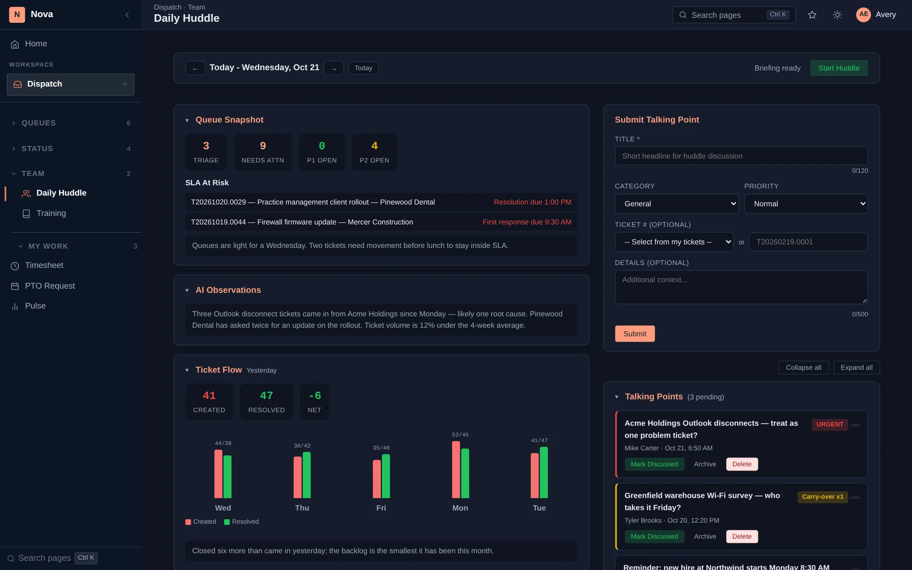

Pulse generates morning briefings, P1 alerts, end-of-day summaries, and per-tech messages in your existing Microsoft Teams. Your dispatcher reads, doesn't author.

Capacity, on-site schedule, escalations, talking points. Posted before standup.
New P1 ticket detected and posted with its details. Someone has to acknowledge it.
Anyone can add a talking point ahead of the huddle. Carry-overs stay on the list until they're discussed.
A ticket has gone quiet. The tech gets a direct message asking for an update.
What got done today and what's carrying over to tomorrow.
An on-site visit is running long. Dispatch hears about it.
No more "lemme check three tabs." Pulse pulls the queue snapshot, tickets at risk of missing SLA, who's out today, the on-site schedule, escalations, and anything flagged for the huddle — and writes a single Teams card that reads in a couple of minutes.
We'll wire Pulse to your Teams channel during the demo. You'll see tomorrow's briefing get drafted live.